Gramática Araucana de Fray Félix José de Augusta (1903)
Presentación
Acá se contiene la Gramática Araucana de Fray Félix José de Augusta, publicada en 1903, en un formato que permite consultar las páginas impresas del original por medio de un menú superior.
Contenidos
Gramática Araucana
Prefacio
Índice
Primera Parte
La pronunciación
Lección 1. El verbo nien tener, poseer, y el pronombre personal
Lección 2. ŋen ser, estar con, tener en el sentido de ‘estar con’
Lección 3. 1. El pronombre posesivo
Lección 4. Sustantivo
Lección 5. Adjetivo
Lección 6. Sustantivo modificado por un complemento rodinario con la preposición “de” (Genitivo)
Lección 7. Verbo
Lección 8. Paradigma
Lección 9. Numerales
Lección 10. Las partículas intercalares: ke, le, lewe, we.
Lección 11. Tiempos secundarios
Lección 12. El pronombre demostrativo
Lección 13. Interrogación
Lección 14. Voz Pasiva
Lección 15. Sujeto de la voz pasiva
Lección 16. Transiciones del verbo en modo indicativo
Lección 17. Transiciones segunda a la tercera persona
Lección 18. Transición Tercera: De la 3a a la 1a, 2a y 3a persona
Lección 19. Transición cuarta: De la 2a a la 1a persona
Lección 20. Transición quinta: De la 1a a la 2a persona
Lección 21. Pronombres y numerales indeterminados
Lección 22. Partícula ‘tu’ iterativa y ‘ka’ continuativa
Lección 23. Partículas de movimiento
Lección 24. Adverbios y expresiones adverbiales
Lección 25. Adverbios de tiempo
Lección 26. Adverbios de cantidad
Lección 27. Adverbios de negación y afirmación
Lección 28. Los adverbios del modo
Lección 29. Algunos adverbios expresados por partículas intercalares
Lección 30. Notas sobre el uso del Dual y Plural del pronombre personal
Lección 31. Preposiciones
Lección 32. Preposiciones (continuación)
Lección 33. Poder, saber, querer, principar a, cesar de, dar fin a, con un infinitivo
Lección 34. Modo Condicional
Lección 35. Reglas sobre el uso del Condicional y de sus tiempos
Lección 36. Las transiciones aplicadas al Condicional
Lección 37. Modo Imperativo
Lección 38. Modo Imperativo (continuación). Aplicación de las reglas de transición al imperativo afirmativo
Lección 39. Imperativo negativo
Lección 40. Infinitivo
Lección 41. Funciones del infinitivo
Lección 42. El infinitivo con transición
Lección 43. El participio terminado en ‘lu’
Lección 44. Reglas generales sobre el participio acabado en ‘lu’
Lección 45. Indicaciones especiales para el uso del participio en ‘lu’
Lección 46. El participio acabado en ‘el’
Lección 47. I. Participio en ‘el’ de los verbos neutros
Lección 48. III. Participio en ‘el’ de forma activa de los transitivos sin nombre posesivo
Lección 49. Los participios en ‘el’ de forma activa de los transitivos precedidos del pronombre posesivo
Lección 50. Las transiciones del participio en ‘el’
Lección 51. El gerundio de intención acabado en ‘am’
Lección 52. El gerundio en ‘üm’
Lección 53. Gerundio en ‘üm’ (peyüm y moyüm) (Continuación)
Lección 54. Adjetivo verbal
Lección 55. El optativo
Lección 56. Conjunciones
Lección 57. Interjecciones
Lección 58. Partículas de adorno
Parte II.
Lección 1. Formación de los sutantivos
Lección 2. Parentezco, afinidad, amistad y salutación
Lección 3. Formación de los adjetivos
Lección 4. Verbalización
Lección 5. Verbos compuestos de dos diferentes verbos
Lección 6. Verbos compuestos de dos diferentes verbos (Continuación)
Lección 7. II. Compuestos del mismo antecedente
Lección 8. Significado de los verbos de raíz duplicada y de los acabados en ‘kantun’
Lección 9. Las modificaciones del sustantivo
Lección 10. Modificaciones que toman los pronombres y adjetivos
Lección 11. Las modificaciones del verbo
Lección 12. Verbos neutros y transitivos de 1a. cl
Lección 13. Estudio sobre la traducción de las proposiciones castellanas
Lección 14. Proposiciones independientes
Lección 15. Construcción del verbo pin (y pen)
Lección 16. Construcción del verbo ‘trokin’ me parece que...
Lección 17. Algunas advetencias sobre la colocación de las partes de la oración
Lección 18. Las partículas lle, rke (rka), pe
Lección 19. Orden las partículas intercalares
III. Parte
Lectura
IV. Parte
Breve diccionario castellano-araucano de algunas palabras más usuales
Pequeño diccionario araucano-castellano contiene las raíces verbales más importantes
Erratas
Gramática Araucana
Prefacio
Índice
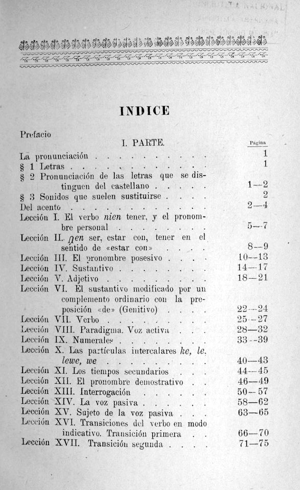Primera Parte
La pronunciación

Lección 1
Lección 2
Lección 3
Lección 4
Lección 5. Adjetivo
Lección 6. Sustantivo modificado por un complemento rodinario con la preposición “de” (Genitivo)
Lección 7. Verbo
Lección 8. Paradigma
Lección 9. Numerales
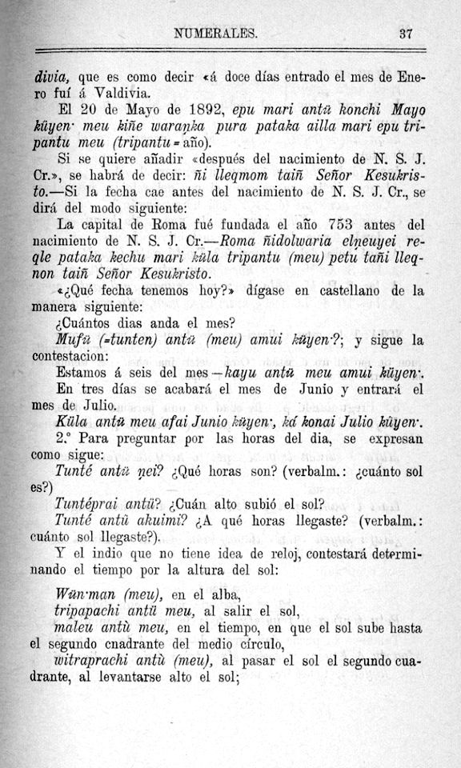Lección 10. Las partículas intercalares: ke, le, lewe, we.
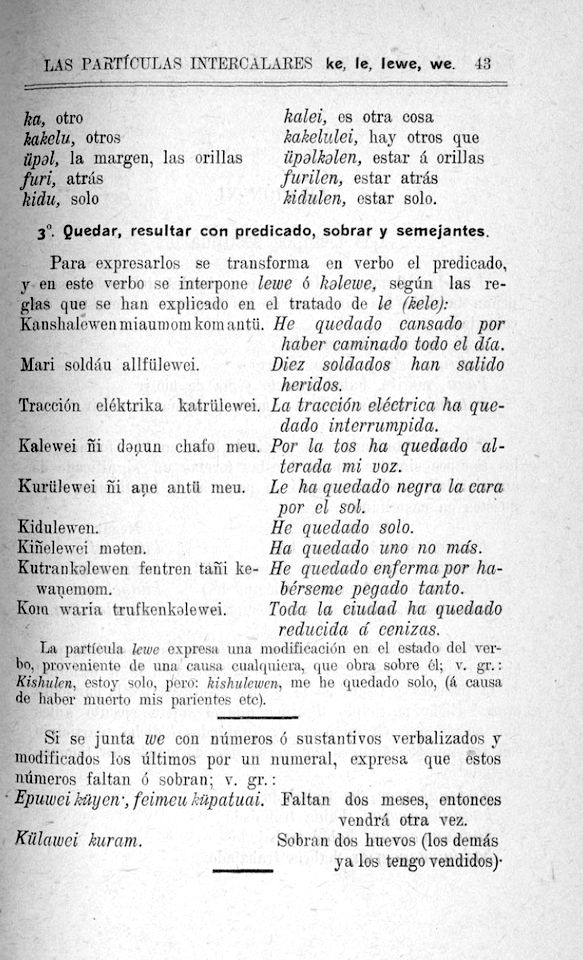Lección 11. Tiempos secundarios
Lección 12. El pronombre demostrativo
Lección 13. Interrogación
Lección 14. Voz Pasiva
Lección 15. Sujeto de la voz pasiva
Lección 16. Transiciones del verbo en modo indicativo

Lección 17. Transiciones segunda a la tercera persona
Lección 18. Transición Tercera: De la 3a a la 1a, 2a y 3a persona
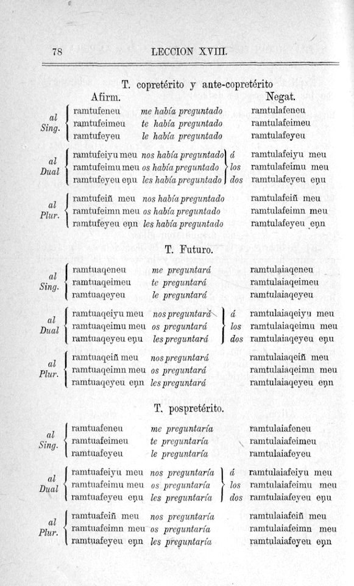Lección 19. Transición cuarta: De la 2a a la 1a persona
Lección 20. Transición quinta: De la 1a a la 2a persona
Lección 21. Pronombres y numerales indeterminados
Lección 22. Partícula ‘tu’ iterativa y ‘ka’ continuativa
Lección 23. Partículas de movimiento
Lección 24. Adverbios y expresiones adverbiales


Lección 25. Adverbios de tiempo
Lección 26. Adverbios de cantidad
Lección 27. Adverbios de negación y afirmación
Lección 28. Los adverbios del modo
Lección 29. Algunos adverbios expresados por partículas intercalares
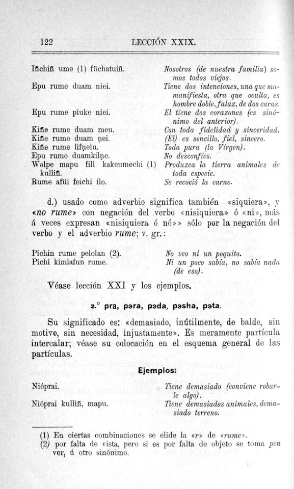Lección 30. Notas sobre el uso del Dual y Plural del pronombre personal
Lección 31. Preposiciones
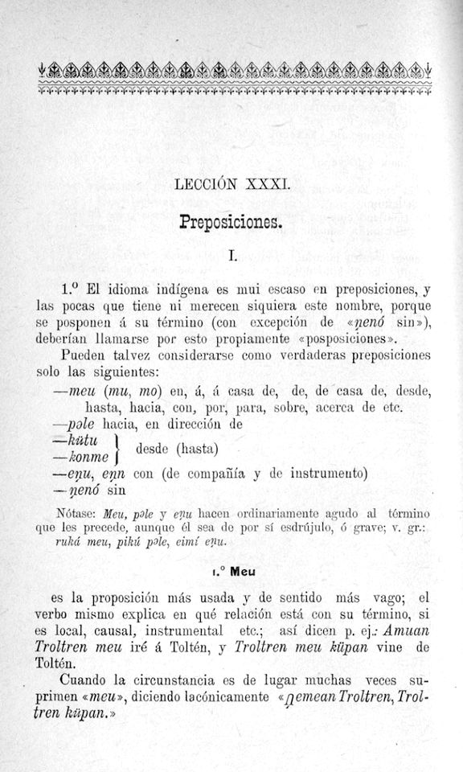
Lección 32. Preposiciones (continuación)
Lección 33. Poder, saber, querer, principar a, cesar de, dar fin a, con un infinitivo

Lección 34. Modo Condicional
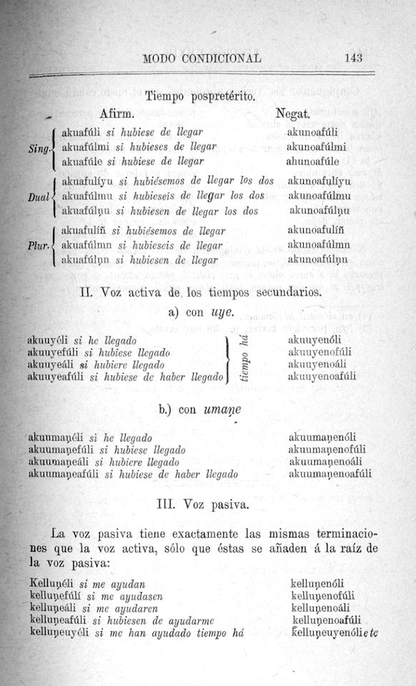Lección 35. Reglas sobre el uso del Condicional y de sus tiempos

Lección 36. Las transiciones aplicadas al Condicional
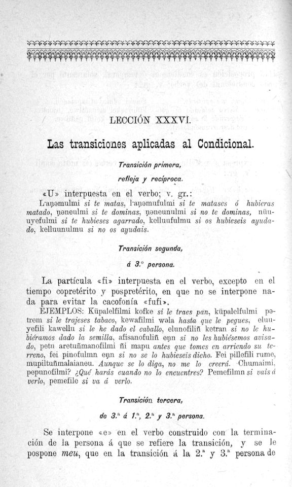 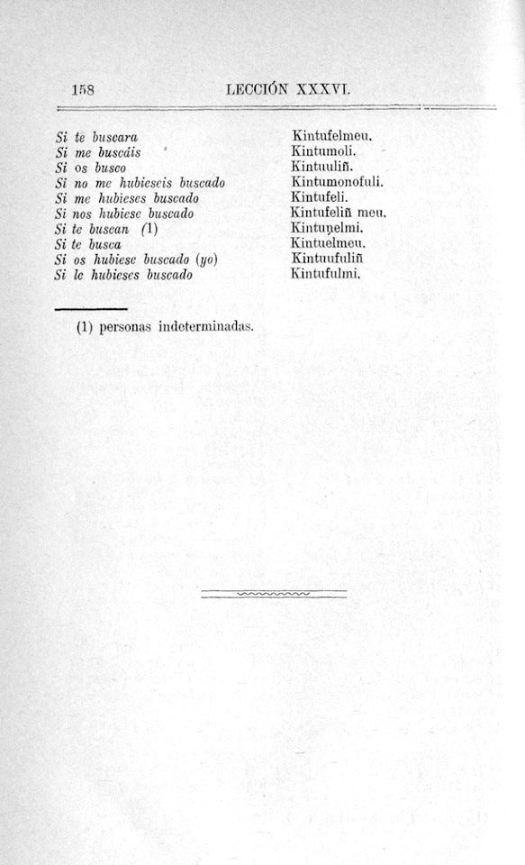Lección 37. Modo Imperativo

Lección 38. Modo Imperativo (continuación). Aplicación de las reglas de transición al imperativo afirmativo

Lección 39. Imperativo negativo
Lección 40. Infinitivo
Lección 41. Funciones del infinitivo
Lección 42. El infinitivo con transición
Lección 43. El participio terminado en ‘lu’
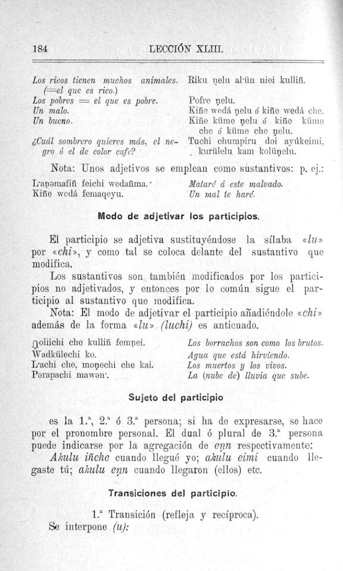Lección 44. Reglas generales sobre el participio acabado en ‘lu’
Lección 45. Indicaciones especiales para el uso del participio en ‘lu’

Lección 46. El participio acabado en ‘el’
Lección 47. I. Participio en ‘el’ de los verbos neutros
Lección 48. III. Participio en ‘el’ de forma activa de los transitivos sin nombre posesivo
Lección 49. Los participios en ‘el’ de forma activa de los transitivos precedidos del pronombre posesivo

Lección 50. Las transiciones del participio en ‘el’
Lección 51. El gerundio de intención acabado en ‘am’
Lección 52. El gerundio en ‘üm’
Lección 53. Gerundio en ‘üm’ (peyüm y moyüm) (Continuación)

Lección 54. Adjetivo verbal
Lección 55. El optativo


 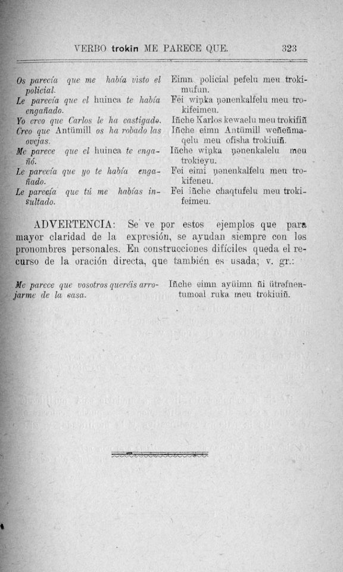
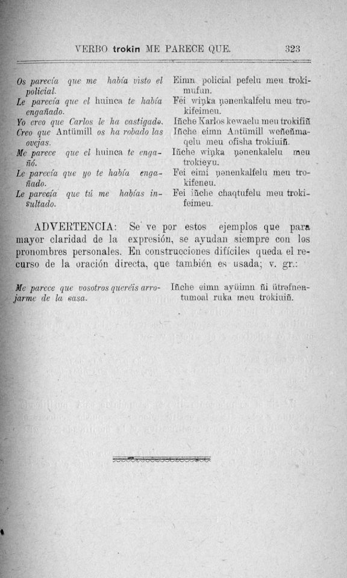